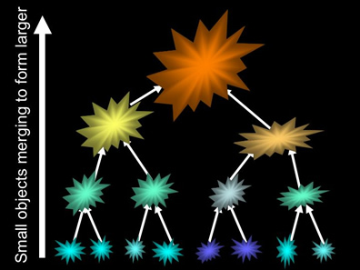
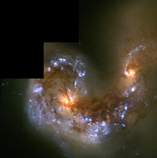
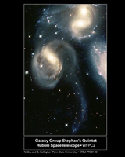
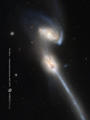
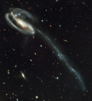
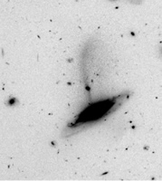
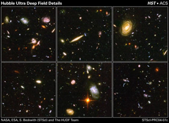

Hierarchical clustering (or hierarchical merging) is the process by which larger structures are formed through the continuous merging of smaller structures. The structures we see in the Universe today (galaxies, clusters, filaments, sheets and voids) are predicted to have formed in this way according to Cold Dark Matter cosmology (the current concordance model).

For example, the formation of galaxies is thought to begin when small structures (perhaps no more massive than globular clusters) merge to form larger objects. These larger objects then merge to from even larger objects, which continue to merge until we arrive at the massive galaxies we see today in the local Universe.
|

NGC4038/4039. The Antennae.
Credit: NASA/HST |
 |
|
|

NGC 4676. The Mice.
Credit: NASA/HST |

UGC 10214
Credit: NASA/HST |

A more distant merger
Credit: NASA/HST |

Credit: NASA/HST
The images above show a small number of the many examples of merger activity in the local Universe. In fact, the Milky Way itself is currently subject to at least two minor mergers, with both the Sagittarius and Canis Major dwarf galaxies in the process of being shredded and absorbed. However, according to Cold Dark Matter cosmology, the rate of mergers is expected to decline as the Universe ages. This means that although we see many mergers in the local Universe, mergers are expected to have been much more common in the past. Evidence to support this comes from observations of distant galaxies (e.g. those contained within the Hubble Deep and Ultra-Deep Fields), which show a much higher percentage of disturbed and interacting galaxies.
Since the merger process takes an extremely short time to complete (less than 1 billion years), there has been ample time since the Big Bang for any particular galaxy to have undergone multiple mergers. The formation history of individual galaxies is therefore potentially extremely complex, and precise predictions difficult. Nevertheless, hierarchical clustering models of galaxy formation make one very important prediction:
Since the merger process continues to the present day, galaxies should possess stars with a range of ages.
This is in direct contrast with the uniformly old ages for stars predicted by primordial collapse models of galaxy formation, and provides a means of determining the relative importance of the each of these processes. While young populations of stars have been observed in the centres of many galaxies, it is not yet clear whether these are a light ‘frosting’, perhaps the result of a secular evolution process, or whether they constitute evidence for major merger events. Astronomers are still investigating the relative importance of hierarchical clustering, primordial collapse and secular evolution in the formation of galaxies.
Although we have talked about hierarchical clustering almost exclusively in the context of the formation of galaxies, it is also an important mechanism on much larger scales – those of galaxy clusters and superclusters. These structures are again formed by the merging of smaller components. Galaxy groups form through the merger of individual galaxies. Groups then come together to form larger groups and clusters, which in turn merge to form large-scale filaments, walls and superclusters.
An example of the ongoing process of hierarchical merging can be initiated with the Milky Way. Right now the Milky Way is undergoing minor mergers with a couple of dwarf galaxies in the Local Group, and also appears to be interacting with both the Large and Small Magellanic Clouds. However, the ultimate fate of our Galaxy is to merge with Andromeda (the other large galaxy in the Local Group) to form a single, massive elliptical galaxy. The Local Group itself will eventually merge with the Virgo cluster, which it is believed will one day merge into the Shapley supercluster (the Great Attractor). This example, which traces the formation of a supercluster from a galactic scale, illustrates why hierarchical clustering is considered to be one of the most important processes in the formation of structure in the Universe.